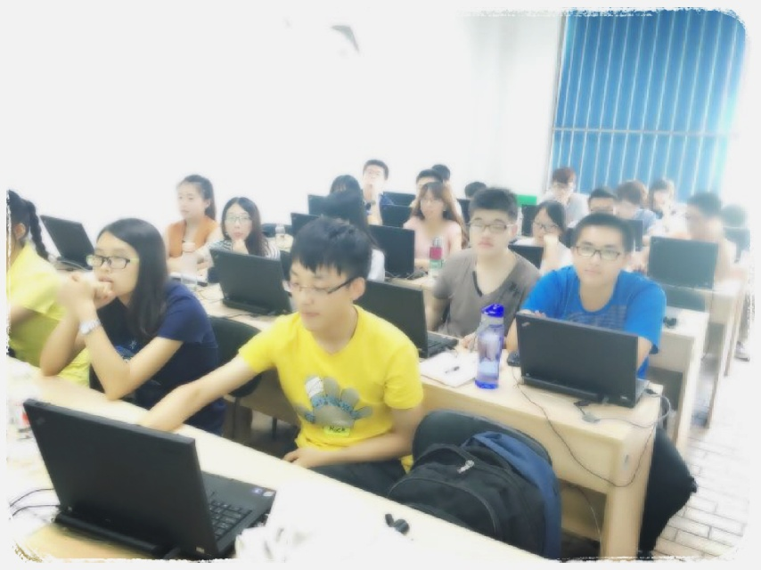

千峰实训
临近放假前两周，学校给我们专业安排了一次校外实训，地点安排在了北京的千峰。于是乎。一行人浩浩荡荡的赶上了飞速的高铁（顺便提一下，学校竟然给报销了来回的火车票），为期两周的实训分为两个部分：html5和android；其实来之前，并没有觉得会学习多么深的知识(结果真的是这样-。-，毕竟时间太短)，感觉这种培训机构对于零基础的学员还是挺有针对性的，从大体的框架到细微的知识点，知识难度的阶梯还是比较小的，一周的时间让大多数人都能大概的掌握一个页面的框架，对于页面能有一个整体的了解。
不过一周的学习的确让我这种半吊子水平的基础扎实了不少，最起码明白了好多常用的属性之间的差异和关联。其次5天的android实训同样也是基础中的基础，android组件就讲了一个activity，还只是简单的画画布局，教了教按钮的事件监听以及activity之间的跳转；对了，还顺手教了sharepreference存储，然后就用这些仅有的知识一天之内来构建一个自己想象中的app。从开始沟通分工到收官展示，短暂的时间内，还是有个团队惊艳到了我，从应用的构建背景（有一个团队做了个亲子之类的，还提到了jay的前世情人），到制作过程，再到产品上线，整个过程完全被情怀所包围。说实话，我们缺少的正是这些，一个产品的优秀离不开宣传。
孔子说，三人行则必有我师。每个人都有自己的优点，这两周的学习，让我看到了其他人的优点，也更确认了自己的缺点。自己更应该付出努力去完善自己的弱点。
最后，在附一张实训图（图是从一个老师那拿过来的，听说用了36级美颜0.0） 